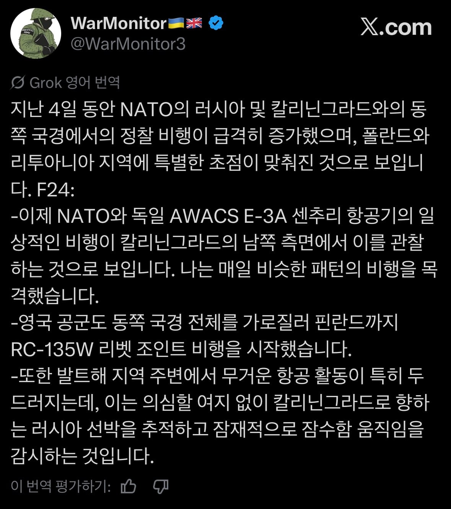
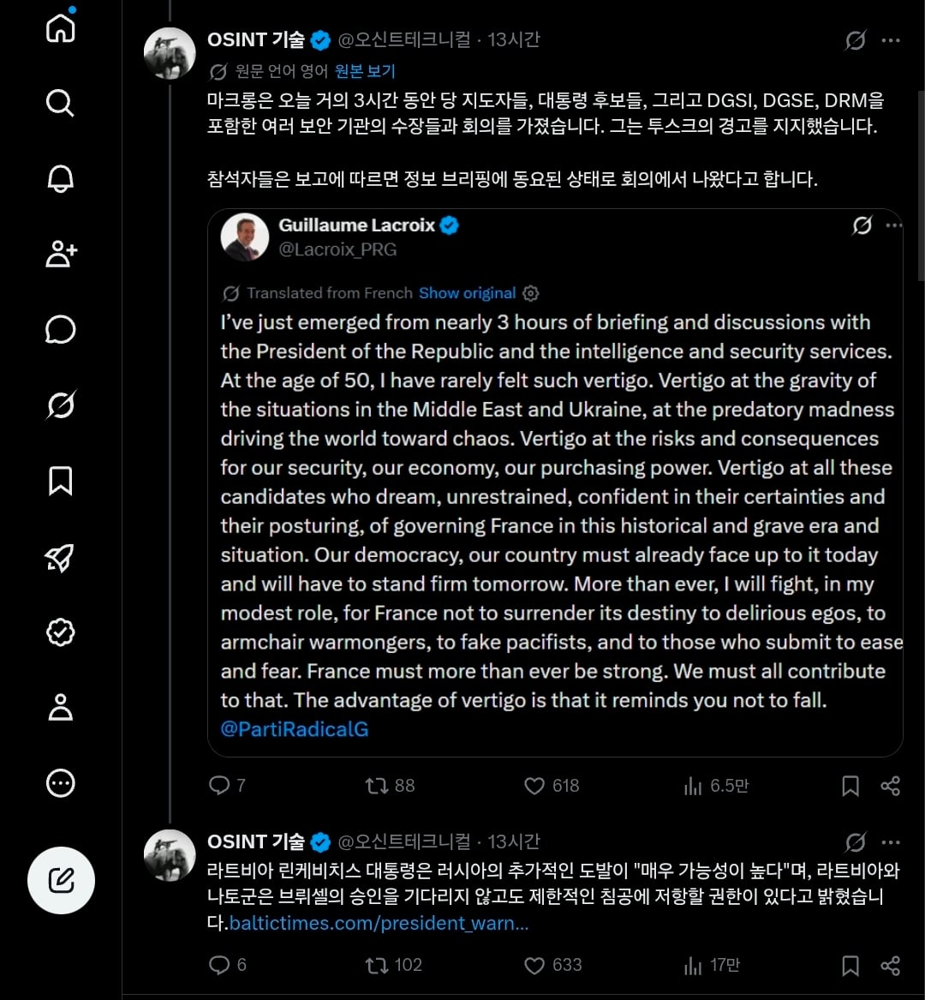
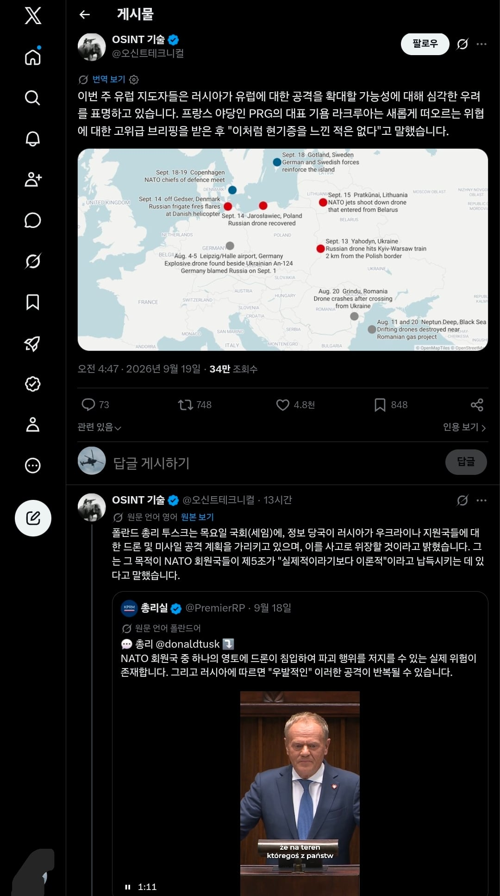

프랑스, 영국, 폴란드, 리투아니아 등등 유럽 각국의 여야당 지도자들이 일제히 "러시아가 확전을 계획하고 있다는 구체적인 정황이 포착됐다"고 밝힘.
이에 따라 폴란드, 리투아니아 상공의 NATO의 정찰비행이 급격히 증가함.



프랑스, 영국, 폴란드, 리투아니아 등등 유럽 각국의 여야당 지도자들이 일제히 "러시아가 확전을 계획하고 있다는 구체적인 정황이 포착됐다"고 밝힘.
이에 따라 폴란드, 리투아니아 상공의 NATO의 정찰비행이 급격히 증가함.
방산주는 폭등하겠지만 다른 실물경제가 꼬라박겠지
진짜 뭔일임? 아직 우크라이나 전쟁도 안끝났는데?
살려만다오
우크라도 마무리못하는데 확전할수가 있음??
러시아 힘 다 빠진 이번 기회에 자작극 벌여서 명분작하고 러시아 잡아먹을지도?
유럽이 러시아 상대로 그런 자작극을 벌인다고? 러시아는 미국 다음가는 핵보유국에
독재국가는 뒤가 없는걸 알고도 그런 자작극을 벌이면 핵찜질받아도 할 말 없지
어차피 핵 못 쓴다고 가정하고 밀어붙이기. 상호확증파괴를 생각한다면 그래. 밀어붙여놓고 내부분열시키기가 제일 유력하지 않을까?
독재국가는 최측근이 XX를 좀 대국적으로 하라고 외치면서 총 쏘는게 아닌 이상 내부분열은 있을수가 없음
오히려 저렇게 전쟁 판 키워지면 국민들은 더 뭉쳐지지
뭐 만에하나 국민들이 자기 끌어내리려고 반전시위 하고 유럽이 자기 턱밑까지 와서 지게 생겼다?
어짜피 평생 감옥에서 썩을텐대 걍 전세계에 핵뿌리고 자1살할듯
러시아도 중국도 엄밀히 말하면 집단지도체제고 푸틴이나 핑핑이나 그 얼굴마담격인거지 절대적 단독권력을 휘두른다곤 볼 수가 없어.
저것들도 땅덩어리가 넓은 탓에 다 통제가 안되다보니 나름대로 군벌별로 정치세력들 짱짱해서.
결국 지배집단이니 뭐니해도 각자의 생존이 최우선이라 분열은 필연적이라고 봐야 함.
핵 못 쓸것 같은데 쓸꺼면 벌써 써음 ㅋㅋㅋ
이거쓰면 미국도 참전 같은데 ㅋㅋㅋㅋㅋㅋ
병신 같은 소리 하네
주가 개박살나겠내ㅣㅔ
우리만 ㅈ될수없다는 식으로 세계대전 노리나
세계대전 하면 러시아가 없어질것같은데
대체 뭘 노리는거지
트럼프 반응인가 중국 대만 침공인가
우리도 북진드가자
근데 러시아가 어디 처들어갈만한 체력이 남아있나
푸틴이 트럼프한테 주식하는법을 배워왔구나
러시아가 확전할 여력이 되나
한다면 드론 공격만 간간히 할 꺼 같은데
러시아도 이제 인도나 중동처럼 행동하기 시작하네?
이제 더이상 물러설 곳 없으니까 다른데 물고 늘어지려고 하는 듯?
혹시 모르긴 한데 러시아가 유럽을 침공할 여력이 있나?
당장 포탄없어서 북한산 싸구려 사온다던거 아녔나
늘 있는 wwe 그런거겠죠?
내 무습다
진짜 3차대전 각인가
슬슬 무서워지네
근데 예전부터 결국 동유럽 침공한다고 전문가들은 계속 경고하긴 했음. 가봐야 아는거겠지만
계속 리투아니아쪽을 순찰하던데 공격한다면
수도가 벨라루스 국경 바로앞에있는 리투아니아가 적당하긴해 평야지대에 라트비아나 에스토니아처럼 숲,호수로 가로막혀있지도 않고
리투아니아만 정복하면 쾨니히스베르크까지 육로연결도 됨
쇼하고있네 ㅋㅋ 그저 군강화목적
아니 독일 폴란드면 이해하겠는데 영국은 왜 지랄이냐고 ㄷㄷ;;
영국은 언제나 러시아 담당일진이라 러시아 견제에 1등으로 활동했음
에이 설마...월요일 주가 볼만 하겠는데?
러샤가 치면 중국이 대만 먹을거고 시발 3차대전 각인데ㅋㅋㅋㅋ
저 칼리닌그라드 러시아 한테서 좀 뺏어야돼 어중간한데가 뭔 러시아 영토임 웃겨 진짜
현금하고 금 비중 늘려야 하나
폴란드 군사력 엄청 보강한거 아닌가 우크라이나에서도 지금 허덕이는데 폴란드 때리고 넘어갈수있나
미국이 이란 틈새에 껴서 정신 못차릴 지금이 기회라고 생각하는건가
우크라이나도 못이기면서 확전을해?.. 그냥 도발이겠지
겠냐에요.
이새끼들 연막치고 장궤놈들 섬나라 점령 드가는거 아니냐
3차 할 때 된건가. 화약고 한두개도 아닌데 이미 터지고 있고, 오이오이 믿고있던 미국도 도람프 때문에 개좆밥처럼 보여서 억제기 터질 것 같은데. 폴란드 확전해서 방산업 호황보다 분위기 파악 못하는 돼지새끼가 근자감 충전해서 같이 날뛸까봐 무서움.
터지기 전에 비염 수술해놓을까 흠
우크라이나도 못 해치우는제 전 유럽으로 확전을 시도할까??
동맹국의 참전유도 명분제공
러시아가 확전할 만큼 병력이되나 ? 그랬다면 우크라이나를 진작 밀었겠지
이거 쭉 나오는 이야긴데 러시아가 전면전을 해서 유럽을 따먹겠다는 의미가 아님.
과연 후방에 있는 국가들이 발트 3국 같은 소국을 위해 마치 자국이 점령당한 것처럼 강경한 태도로 반격을 할 수 있겠냐는거. 나토인데 그게 되겠냐 싶겠지만 우크라이나에 병력 보내잔 이야기가 흐지부지 된 것도 결국은 확전되는걸 피하고 싶은거지 하고 싶은데 집단 방위 조약이 없어서 못하고 있는게 아니니까.
칼리닌그라드 말 나오는거 봐선 이게 맞다고 봄. 러시아체급으로 어떻게 유럽을 다 처먹음...걍 발트3국정도 건드리겠지
러시아는 따갚되를 하려는건가?
메포어음이라도 찍음?
아이러니하게 만약 폴란드가 전쟁하는 순간 우리나라 무기가 실전뛰고 방산주 폭등할거임